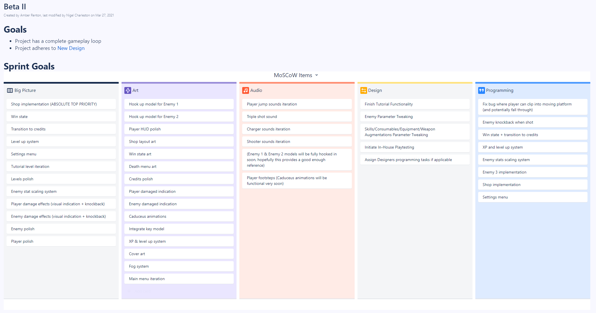

These past two weeks have been slower than usual - as the development cycle wraps up, production work becomes a little more laid back. As a reuslt, I've had the opportunity to help the art & programming teams with some final tasks that have fallen by the wayside.
Studio-wide & Leads Meetings
Again, fairly similar to the past dev blogs. Unfortunately, I had to sit out of the leads meeting on Saturday 4/3 as I felt a little unwell (I got the Pfizer vaccine - yay!). However, I still provided an agenda for the leads to follow in their discussion. The leads meeting prior to this, on 3/27, went just as expected.
Studio-wide meetings were also business as usual. For these, I spend an hour or two preparing a presentation as well as a progress video to showcase the game. These past two weeks, I was able to receive some assistance in recording the progress videos. Afterwards, I edit and post these videos online. The progress video for 4/4 (mid Pre-Beta II) is shown below.
I've also continued having the scheduled ~30 minute check-ins with the leads of each pod/department these past two weeks. Unfortunately, I sometimes have to really chase a few people down to make these happen, and there have been more time conflicts than usual lately, so a lot of these check-ins have happened through DMs. Although these check-ins continue to be helpful in following along with the big-picture state of development, they have also started to slow down as development becomes more predictable nearing its end.
Creating a Sprint Plan
At the eve of Pre-Beta II, which began officially on March 28th, I once again sat down and outlined all tasks to be completed over the duration of the sprint. Though this was still a big undertaking, it was a little easier this time around as many tasks from the previous sprint carried over. Still, it took a lot of coordination with other leads to pull off. I'm told that the "Sprint Goals" section (pictured below) is the most helpful part of these documents. In these sections, I lay out several big picture "goals" for each department, and then use these goals to create the appropriate tasks. Although the audio team prefers to create tasks independently, I've been told that having this section makes task creation feel less like "random guessing" to them - so, for the future, this is a process that will most likely stick!
Cover Art Drafting
Now that development is wrapping up, a few important tasks are introduced - a large one being cover art. As the art team is stretched a bit thin at the moment, I volunteered to take on this task. Admittedly I'm a bit rusty when it comes to drawing, but a mockup of the cover art that conveys its general layout can be seen below.

I posted this in #art-preview for feedback, and reception was generally positive. I did receive some feedback in an art meeting that Hermes' left arm (the one not holding the Caduceus) is in a bit of an awkward spot, so I did a quick iteration to put it in a slightly more sensible place.

I've begun lining the art, but to be completely honest, I am not satisfied with the linework so far. I'm going for a very Hades-esque style (by Hades, I'm referring to the indie game that came out recently), which is very much not something I'm used to. Below is a work in progress shot of the lineart that I am very-not-proud-of. I promise, it'll look better when it's done!

Animation Assistance
Another thing I helped the art team out with these past two weeks has been setting up and debugging animations. The enemy animations have been pretty awkward so far - we have these awesome, 3rd party animations, but hooking them up properly has been very difficult. I volunteered to take another look at what was causing the animations for the Charger and the Shooter to go haywire.
Final Thoughts
Overall, I'm much more confident in the progress of the project at this point than I was while writing the previous dev blog. Although I do still believe we're in a precarious position, we're making good progress in correcting the major overscoping we did at the start of development. I will give a more big picture overview of all my observations in the final dev blog. For now, we have approximately 3 or so weeks of development left - we will move forward with confidence!